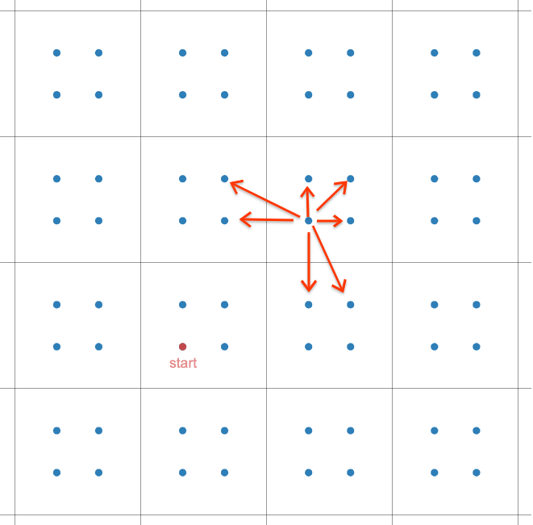

「ARC 109A」Hands
Link.
讨论即可，除了煞笔出题人写了个死马的题面。
#include<cstdio>
#include<algorithm>
using namespace std;
int a,b,x,y,ans;
int main()
{
scanf("%d%d%d%d",&a,&b,&x,&y);
if(a>b) printf("%d\n",min(x<<1,y)*max(0,abs(a-b)-1)+x);
else printf("%d\n",min(x<<1,y)*max(0,abs(a-b))+x);
return 0;
}
「ARC 109B」log
Link.
要贪心的取的话，肯定是先把 $n+1$ 取了，然后我们来二分。
$1-n$ 分别有 $n+1$ 到 $2$ 种方法可以组成他。
然后来考虑怎么 check。
可以知晓，如果没有这一块多的木块，就一定需要 $n$ 块木头。
然后就按开头那个贪心，把 $n+1$ 从 $1$ 分完，剩下的再依次分。
#include<cstdio>
unsigned long long n;
bool check(unsigned long long x)
{
return (x*(x+1)>>1)<=n+1;
}
unsigned long long search(unsigned long long l,unsigned long long r)
{
unsigned long long res=0;
while(l<=r)
{
unsigned long long mid=(l+r)>>1;
if(check(mid))
{
l=mid+1;
res=n-mid+1;
}
else r=mid-1;
}
return res;
}
int main()
{
scanf("%llu",&n);
printf("%llu\n",search(1,2e9));
return 0;
}
「ARC 109C」Large RPS Tournament
Link.
$2^{k}$！好耶！！！
考虑倍增 DP。设 $f_{i,j}$ 为区间 $[i,i+2^{j}-1]$ 的 winner's hand。
设计一个函数 $\text{tournament}(P,Q)$ 为 $P$、$Q$ 比武后的赢家。
转移即 $$ f_{i,j}=\text{tournament}(f_{i,j-1},f_{i+2^{j-1},j-1}) $$ 当然你不能直接用 $2^{k}$ 当成序列来做，反正他是循环节我们直接做 $k$ 轮最后合并即可。
实际实现时不需要这么写（主要是写不来）（好像可以记忆化？）。
#include<string>
#include<cstdio>
#include<cstring>
#include<iostream>
using namespace std;
string s;
int n,k;
char tour(char one,char ano)
{
if(one=='R')
{
if(ano=='R') return 'R';
else if(ano=='P') return 'P';
else return 'R';
}
else if(one=='P')
{
if(ano=='R') return 'P';
else if(ano=='P') return 'P';
else return 'S';
}
else
{
if(ano=='R') return 'R';
else if(ano=='P') return 'S';
else return 'S';
}
}
int main()
{
scanf("%d%d",&n,&k);
cin>>s;
while(k--)
{
string tmp=s+s;
for(int i=0;i<n;++i) s[i]=tour(tmp[i<<1],tmp[i<<1|1]);
}
printf("%c\n",s[0]);
return 0;
}
「ARC 109D」L
图画出来差不多，向目标进发，步数下界就出来了 $\max{|x|,|y|}$。
这张图是在这里嫖的：

注意特判一些奇怪的情况，具体自己看代码吧吧吧吧。
#include<cstdio>
#include<algorithm>
using namespace std;
int t,onex,oney,anox,anoy,exx,exy,finalx,finaly;
int main()
{
scanf("%d",&t);
while(t--)
{
scanf("%d%d%d%d%d%d",&onex,&oney,&anox,&anoy,&exx,&exy);
finalx=min(onex,min(anox,exx));
finaly=min(oney,min(anoy,exy));
finalx=(finalx<<1)+(finalx!=onex)+(finalx!=anox)+(finalx!=exx)-1;
finaly=(finaly<<1)+(finaly!=oney)+(finaly!=anoy)+(finaly!=exy)-1;
printf("%d\n",max(abs(finalx),abs(finaly))+((finalx==finaly)&&(finalx>1||finalx<0)));
}
return 0;
}
「ARC 109E」1D Reversi Builder
Link.
「ARC 109F」1D Kingdom Builder
Link.